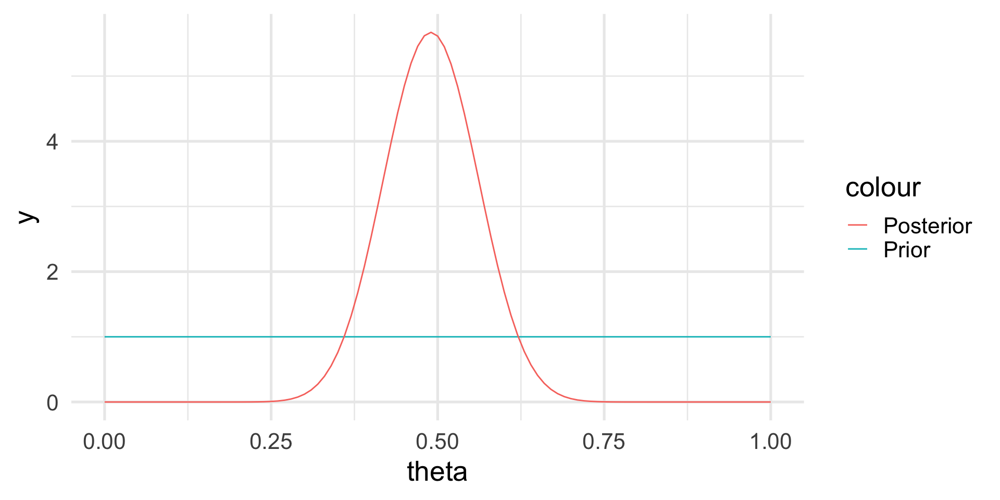

Individual DYS19 DXYS156Y DYS389m DYS389n DYS389p
1 H1 14 12 4 12 3
2 H3 15 13 4 13 3
3 H4 15 11 5 11 3
4 H5 17 13 4 11 3
5 H7 13 12 5 12 3
6 H8 16 11 5 12 3Nonparametric and Bayesian methods
Advanced Statistics and Data Analysis
Davide Risso
The Bootstrap
Parametric vs nonparametric inference
Up until now, we have discussed parametric models, meaning that we have always made some assumptions on the data generating distribution.
In particular, by assuming that the distribution belongs to a particular family, indexed by a parameter, we turn the difficult problem of estimating the distribution to the simpler problem of estimating a parameter.
Parametric vs nonparametric inference
Sometimes, we may not have enough information to assume a specific parametric form for our data generating distribution.
Alternatively, we may want to obtain results that do not depend on the specific distribution that we assume.
In such cases, we can rely on nonparametric techniques, such as the bootstrap and permutations.
The Bootstrap
The Surprising Adventures of Baron Munchausen (1781)
Frequentist estimates
When we think about an estimator in statistics, we think about a function of the data that has some desirable properties in a frequentist sense.
For instance, the distribution of an estimator can be interpreted in this way: if we repeat the same experiment an infinite amount of time we will get different estimate values, that taken together give us an idea of how variable my estimate is.
Frequentist estimates
If we know the data generating distribution \(F(x)\), we can compute the standard deviation of the estimator by repeatedly sample new data \(x\).
In practice this is impossible because we do not know the distribution \(F\).
The (nonparametric) Bootstrap
The main idea behind the nonparametric bootstrap is to substitute an estimate \(\hat{F}_n(x)\) for the unknown \(F(x)\) and then estimate the standard deviation by sampling multiple times from \(\hat{F}_n(x)\).
This is done by creating a bootstrap sample \[ x^* = (x^*_1, x^*_2, \ldots, x^*_n), \] from the original data \(x = (x_1, x_2, \ldots, x_n)\), where each \(x^*_i\) is drawn randomly with equal probability and with replacement from \(\{x_1, x_2, \ldots, x_n\}\).
The (nonparametric) Bootstrap
Given a sample of \(n\) observations, the bootstrap proceed as follows:
We independently generate a large number \(B\) of bootstrap samples;
We compute for each bootstrap sample the estimate of the parameter, \(\hat \theta^*_b\), for \(b=1, \ldots, B\).
We compute the empirical standard deviation of the B \(\hat \theta^*_b\) values:
\[ \hat{s}_{boot} = \sqrt{\frac{\sum_{b=1}^B (\hat \theta^*_b - \hat \theta^*)}{B-1}}, \quad \quad \text{ with } \quad \hat \theta^* = \sum_{b=1}^B \theta^*_b / B \]
Motivation
We notice that to obtain our estimate of \(\theta\), we proceed in two steps:
\(x\) is generated by sampling independently from the data generating distribution \(F(x);\)
\(\hat \theta\) is calculated from \(x\) according to a certain function \(t\).
Schematically: \[ F \to x \to \hat\theta. \]
Motivation
We don’t know \(F\), but we can estimate it by the empirical distribution of the observed data, \(\hat{F}_n\), which puts \(1/n\) probability to each observed point \(x_i\):
\(x^*\) is generated by sampling independently from the empirical distribution \(\hat{F}_n(x);\)
\(\hat \theta^*\) is calculated from \(x^*\) according to the same function \(t\).
Schematically: \[ \hat{F}_n \to x^* \to \hat\theta^*. \]
Motivation
In the real world we get to see only one draw \(x\) from \(F\) and hence only one value \(\hat\theta\).
In the bootstrap world we can generate as many draws as we want from \(\hat{F}_n\) and observe the distribution of \(\hat\theta^*.\)
Example: Haplotype frequencies
A haplotype is a collection of alleles (DNA sequence variants) that are spatially adjacent on a chromosome, are usually inherited together (recombination tends not to disconnect them), and thus are genetically linked. In this case we are looking at linked variants on the Y chromosome.
We are interested in the frequencies of particular Y-haplotypes that consist of a set of different short tandem repeats (STR). The combination of STR numbers at the specific locations used for DNA forensics are labeled by the number of repeats at the specific positions.
Example: Haplotype frequencies
The data look like this:
For instance, haplotype H1 has 14 repeats at position DYS19, 12 repeats at position DXYS156Y, etc.
Suppose we want to find the underlying proportion \(\theta\) of a particular haplotype in a population of interest, by haplotyping \(n=300\) men; and suppose we found H1 in \(y = 40\) of them.
Parametric approach
We can assume that the data generating distribution is \(Y \sim \mathcal{Bin}(n, \theta)\).
By now we know that the maximum likelihood estimate of \(\theta\) is \(\hat{\theta} = 40/300 = 0.13\).
We can compute its standard error \[ se(\hat\theta) = \sqrt{\hat\theta(1-\hat\theta)/n} = 0.0196 \]
Nonparametric approach
Confidence intervals
The bootstrap distribution gives us a natural way to estimate the confidence interval by looking at the empirical quantiles of the bootstrap distribution
Bayesian inference
The Frequentist Phylosophy
The statistical methods discussed so far are known as frequentist.
The frequentist point of view is based on the following ideas:
Probabilities are objective properties of the real world: they are defined as the limit of the relative frequencies in infinite many trials.
Parameters are fixed, unknown constants.
As a consequence, a frequentist methods are designed to have good long-run frequency properties.
Example
A \(95\%\) confidence interval is defined so that it includes the true value of the parameter \(95\%\) of the times if we repeat the experiment an infinite number of times.
Note that it is not the parameter but the interval to be random!
The Bayesian Phylosophy
The Bayesian approach takes a very different point of view:
Probabilities describe a degree of belief: they are not objective properties of the world, but rather subjective propositions.
Parameters are random variables: there is no such thing as the true parameter, all we know is the probability distribution of its values.
As a consequence, inference in a Bayesian setting takes the form of an “updated” distribution of the parameter: we can then extract point estimates and intervals from this distribution.
Model specification
In frequentist inference, we need a model for the data generating distribution (i.e., the likelihood).
In the Bayesian framework, in addition to the likelihood, we need to specify a prior distribution for the parameter(s).
This prior distribution elicit our prior belief in what the value of the parameter should be.
Inference is carried out by updating the prior distribution with the new knowledge that we observed in the data, to form the posterior distribution.
Bayes’ Theorem
Recall Bayes’ Theorem as a way to “invert” the conditional probability: \[ P(A | B) = \frac{P(B | A) P (A)}{P(B)} \]
Example: births in Paris
Laplace was the first to formulate a statistical problem in Bayesian terms.
The question he poses was whether the probability of a female birth is or is not lower than 0.5.
Data: in Paris, from 1745 to 1770 there were 493,472 births, of which 241,945 were girls.
A frequentist solution
We can assume a binomial model and get a frequentist estimate for the probability of a female birth as \(\hat\theta = \frac{241,945}{493,472} = 0.4903\)
We can also compute a confidence interval \([0.4889, 0.4917]\)
Finally, we can test the null hypothesis \(H_0: \theta = 0.5\) and reject it as the obtained p-value is close to 0.
A Bayesian solution
Laplace argues that he has no reason to a priori believe that any value of \(\theta\) is more likely than others.
Hence, the prior probability is \(p(\theta) \sim \mathcal{U}(0, 1)\).
We can prove that in such case the posterior distribution is
\[ p(\theta | \text{data}) \propto \theta^{241,945} \, (1-\theta)^{493,472 - 241,945} \]
The posterior distribution
Bayes’ Theorem revisited
In statistics, we can rethink the Bayes’ Theorem in terms of the data and the parameter: \[ p(\theta | y) = \frac{p(\theta) \, p(y | \theta)}{p(y)}, \] where:
- \(p(\theta)\) is the prior distribution of the parameter
- \(p(y | \theta)\) is the distribution of the data given a particular value of the parameter (i.e., the likelihood)
- \(p(y)\) is the marginal distribution of the data (across all possible values of the parameter)
Note
Much of Bayesian statistics deals with ways to compute/approximate \(p(y)\).
Example: Haplotype frequencies
A haplotype is a collection of alleles (DNA sequence variants) that are spatially adjacent on a chromosome, are usually inherited together (recombination tends not to disconnect them), and thus are genetically linked. In this case we are looking at linked variants on the Y chromosome.
We are interested in the frequencies of particular Y-haplotypes that consist of a set of different short tandem repeats (STR). The combination of STR numbers at the specific locations used for DNA forensics are labeled by the number of repeats at the specific positions.
Example: Haplotype frequencies
The data look like this:
Individual DYS19 DXYS156Y DYS389m DYS389n DYS389p
1 H1 14 12 4 12 3
2 H3 15 13 4 13 3
3 H4 15 11 5 11 3
4 H5 17 13 4 11 3
5 H7 13 12 5 12 3
6 H8 16 11 5 12 3For instance, haplotype H1 has 14 repeats at position DYS19, 12 repeats at position DXYS156Y, etc.
Suppose we want to find the underlying proportion \(\theta\) of a particular haplotype in a population of interest, by haplotyping \(n=300\) men; and suppose we found H1 in \(y = 40\) of them.
Frequentist approach
We can assume that the data generating distribution is \(Y \sim \mathcal{Bin}(n, \theta)\), with \(\theta\) fixed and unknown.
By now we know that the maximum likelihood estimate of \(\theta\) is \(\hat{\theta} = 40/300 = 0.13\).
We can compute confidence intervals and test hypotheses on the true value \(\theta\).
Bayesian approach
In a Bayesian setting, \(\theta\) is not fixed, and we need to assume a prior probability distribution for the parameter as well.
In principle we could use any distribution.
It is convenient to specify a Beta distribution, i.e.
\[ p_{\alpha, \beta}(x) = \frac{x^{\alpha-1} (1-x)^{\beta-1}}{B(\alpha, \beta)}, \] where \(B(\alpha, \beta) = \frac{\Gamma(\alpha) \Gamma(\beta)}{\Gamma(\alpha+\beta)}\) is called the beta function.
Prior distribution
We can see how the prior distribution depends on two parameters, in this case \(\alpha\) and \(\beta\).
These are known as hyper-parameters and are typically chosen according to some prior information.
The choice of a Beta distribution in this case is mathematically convenient, as one can show that the posterior distribution will be again a Beta distribution.
We say that the Beta distribution is the conjugate prior for the binomial model.
How to choose the hyperparameters
The hyperparameters are our way to express our prior knowledge of the problem.
An intuitive way is to think about the prior mean and variance as a way to elicit what is the value that we expect before performing the data (mean) and how confident we are in our prediction (variance).
The Beta distribution is quite flexible in that it includes the uniform distribution (absence of prior information) as well as very concentrated distributions.
How to choose the hyperparameters
If \(X \sim \mathcal{Beta}(\alpha, \beta)\), then \[ E[X] = \frac{\alpha}{\alpha + \beta} \] and
\[ Var(X) = \frac{\alpha\beta}{(\alpha + \beta)^2(\alpha+\beta+1)} \]
Example: Haplotype frequencies
Let’s think about three situations:
We have no prior knowledge on the haplotype frequencies in the population: we can choose a uniform distribution.
We know from the literature that one in five men should have haplotype H1, but we are not very confident.
We are very confident that one in five men has haplotype H1.
Example: Prior distribution
The posterior distribution
If the prior is Beta and the likelihood is Binomial, the posterior distribution is still Beta, but with updated parameters: \[ p(\theta | y) \sim \mathcal{Beta}(\alpha + y, \beta + n - y). \]
Hence, \[ E[\theta | y] = \frac{\alpha+y}{\alpha + \beta + n}, \]
which is a synthesis of the prior information and the information contained in the data.
The posterior distribution

The posterior distribution

Note that we do not have a single answer for the “best” value of \(\theta\) but a distribution.
However, we can calculate the posterior mean and probabilities based on the posterior distribution, e.g., \(Pr(\theta > 0.2) \approx 0.003\).
The posterior distribution
Let’s look again at the posterior distribution: \[ \theta | y \sim \mathcal{Beta}(\alpha + y, \beta + n - y). \]
As we increase the sample size, we give more weight to the data.
Conversely, if we increase the hyperparameters we give more weight to our prior belief.
Credibility intervals
The Bayesian analog of the confidence intervals are the credibility intervals.
These are much more natural to think about: they are straightforward to interpret in terms of the posterior probability of the parameter.
For instance, we can use quantiles to compute the range in which the parameter lies with \(95\%\) probability.
\[ Pr(q_{2.5} \leq \theta \leq q_{97.5}) = 0.95 \]
Example: Haplotype frequencies
Putting it all together, we can specify our Bayesian model as:
The data generating distribution is \(y|\theta \sim \mathcal{Bin}(n=300, \theta);\)
The prior distribution is \(\theta \sim \mathcal{Beta}(\alpha = 16, \beta = 64);\)
Observing \(y=40\) leads to the posterior distribution \[ \theta | y \sim \mathcal{Beta}(16+40, 64 + 300 - 40). \]
Example: Haplotype frequencies
The posterior mean is
\[ E[\theta | y] = \frac{\alpha+y}{\alpha + \beta + n} = 0.147 \]
(compared to a MLE of \(\hat\theta = 0.13\)).
Not just Beta
Many of the concepts that we have seen in this example extend to many other distributions!
For instance if we have Gaussian data, a Gaussian prior on the mean will lead to a Gaussian posterior.
This is true for the linear model too!
Not just conjugate priors
There are many different choices of prior distributions, and when closed form solutions do not exist to compute the posterior, we need to use numerical approximations or simulation approaches.
Markov Chain Monte Carlo (MCMC) and Variational Approximations are perhaps the two most popular techniques.